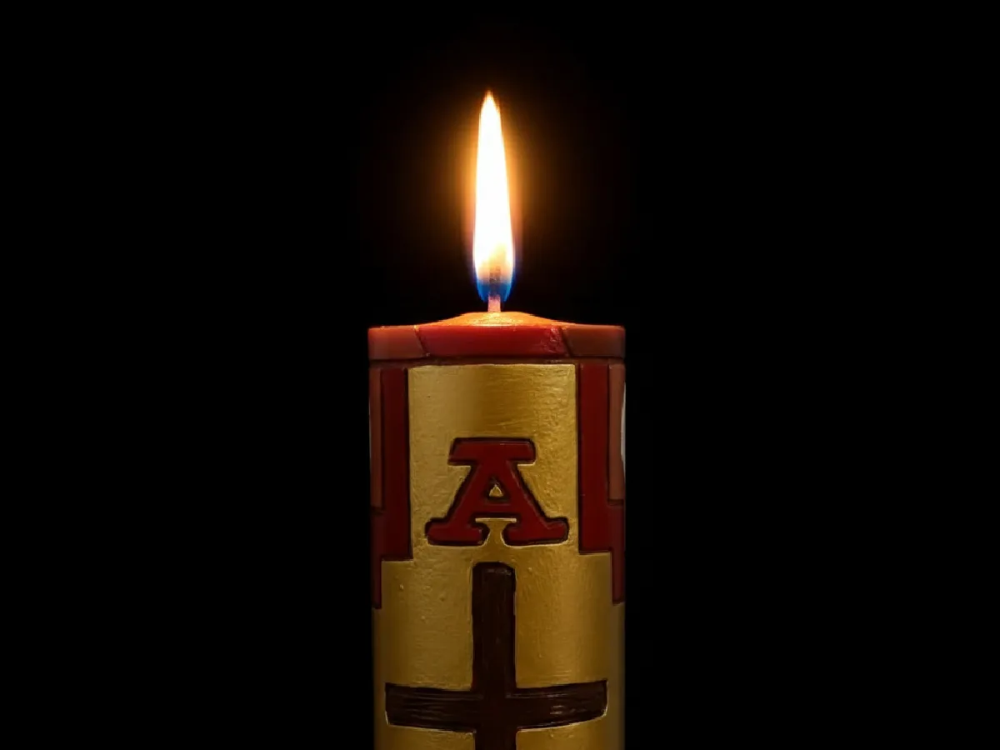
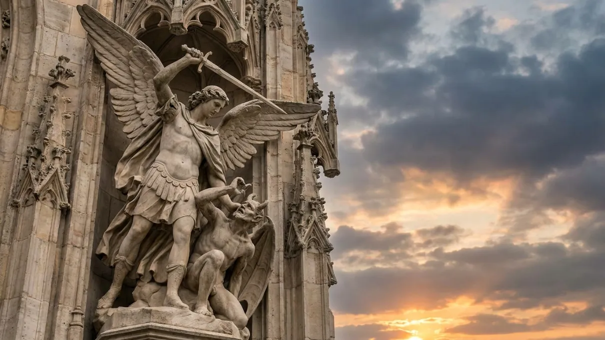

Oración
Guías para rezar, en el templo o en casa.
«No sabemos pedir como conviene, pero el Espíritu mismo intercede por nosotros» (Rom 8, 26). Aquí encontrarás guías completas para rezar solo o en familia. Todas funcionan sin conexión una vez que las hayas abierto, y recuerdan por dónde ibas.

Rosario y Coronilla
Los misterios de cada día y la Coronilla a la Divina Misericordia, con todas las oraciones y el modo de meditarlas.
Rezar →
Novena Perpetua
Elige la devoción o el santo y la novena se arma sola, con sus nueve días. Puedes llevar varias a la vez y retomarlas donde las dejaste.
Comenzar →
Lectio Divina
Leer, meditar, orar y contemplar la Escritura. El método clásico explicado paso a paso, con lecturas guiadas.
Meditar →Tiempo para Dios
¿No sabes por dónde empezar a orar? Guía práctica sobre la oración mental, las distracciones y la perseverancia.
Aprender →
Examen de conciencia
Recorrido por los mandamientos y por el propio estado de vida para preparar bien el sacramento de la Reconciliación.
Examinarme →
Lucha contra el Maligno
Súplicas privadas, invocaciones a la Trinidad, a la Virgen y a san Miguel, y los sacramentales de la Iglesia.
Acceder →Rezar con la comunidad
La oración personal se alimenta de la oración de la Iglesia. Estos son los momentos en que nos reunimos: